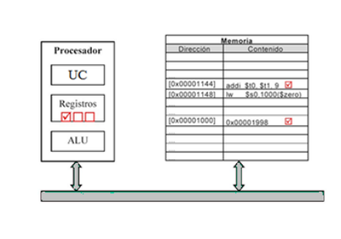

2.1.4-.Modos de Direccionamiento.
Distintas formas que tiene la arquitectura para especificar la ubicación de los operandos.
Objetivos:
- Reducir el número de bits para especificar un operando en memoria.
- Dar soporte a las estructuras de datos de alto nivel.
Pueden ser:
- Para datos, sobre los que opera la instrucción.
- Para instrucciones, especifica la dirección de la siguiente instrucción a ejecutar (en instrucciones de control).

2.1.4.1-.Necesidades de direccionamiento.
Dónde puede estar un operando:
- En la propia instrucción.
- En un registro.
- En memoria
Direccionamiento por registro: El campo de dirección especifica un registro donde está el operando.

Direccionamiento Inmediato: El operando está en la instrucción.
Direccionamiento directo: El campo de dirección contiene la dirección efectiva del operando.
Direccionamiento indirecto por registro: Se especifica un registro donde está la dirección del operando.
Direccionamiento indirecto por memoria: El campo de direcciones contiene la dirección de una palabra donde está la dirección del operando.

Direccionamiento base + desplazamiento: Combina posibilidades del directo (facilidad de uso) y del indirecto por registro (menos bits para especificar dirección). Habrá que especificar un registro y un valor. La suma del contenido del registro y el valor es la dirección del operando.